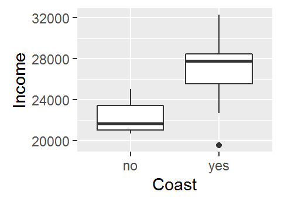
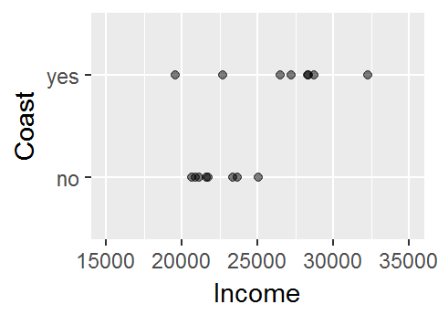
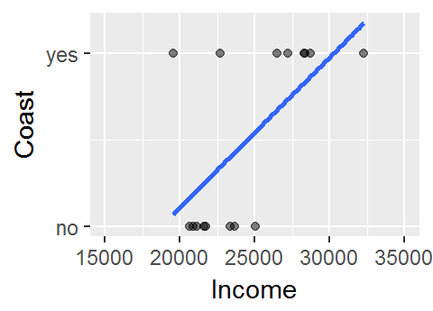
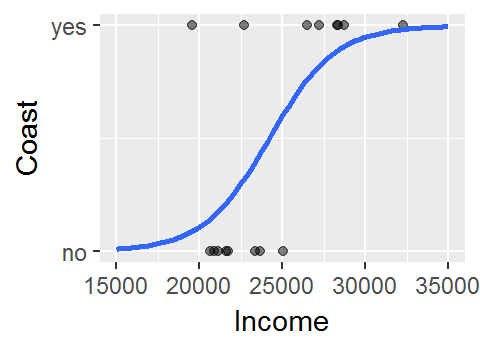
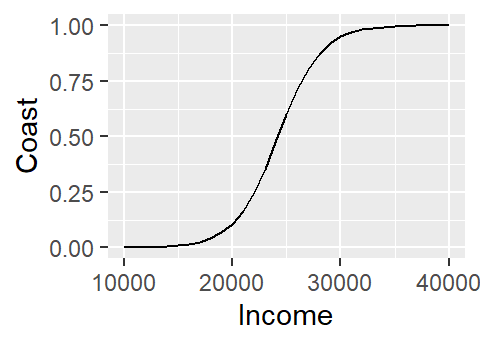
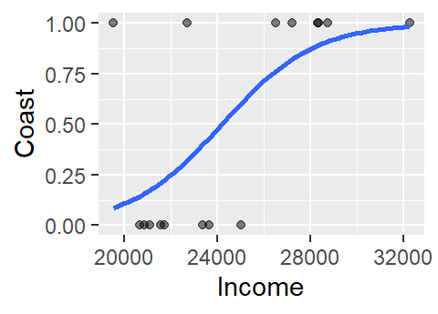
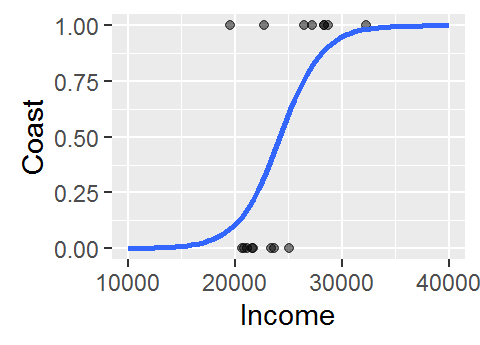

Logistic regression
Last modified on 2022-09-09
Packages used in this tutorial:
library(ggplot2) # USed for plotting data
library(dplyr) # Used to extract columns in the data
library(rms) # Used to extract p-value from logistic modelAnother package used in this tutorial is gdata, but its function will be called directly from the package (e.g. gdata::mapLevels) in section 2.
1 Introduction
We’ll be making use of median per-capita income data aggregated at the county level for the state of Maine. We will focus on the relationship between income and whether or not the county is on the coast.
# Load dataset
dat <- read.csv("http://mgimond.github.io/Stats-in-R/Data/Income_and_education.csv", stringsAsFactors = TRUE)
# Limit the dataset to the two columns of interest
df <- select(dat, Coast, Income = Per.capita.income )
df Coast Income
1 no 23663
2 no 20659
3 yes 32277
4 no 21595
5 yes 27227
6 no 25023
7 yes 26504
8 yes 28741
9 no 21735
10 no 23366
11 no 20871
12 yes 28370
13 no 21105
14 yes 22706
15 yes 19527
16 yes 28321One approach to exploring this dataset is to see how per capita income varies as a function of the county’s coastal status (i.e. whether or not the county borders the ocean or not). A t-test statistic could be used to assess if incomes differ between coastal and non-coastal communities.

Or, if one wanted to model that relationship, a categorical regression analysis could be implemented.
But what if we are interested in flipping the relationship? In other words, what if we wanted to see how the coastal status of a county related to per capita income? More specifically, what if we wanted to see if county level income could predict whether a county is on the coast or not. Visually, this relationship would look like:

This does not look like a typical scatter plot one sees in a regression analysis, but the relationship we are exploring is similar in concept–i.e. we are seeking a model of the form Y = a + bX. We could, of course, fit a linear model to the data as follows:

The model to the above fit is of the form Coast = -1.6 + 8.7e-05 Income. Now, you may see a couple of issues with this model. For starters, the model implies that there are coast values other than yes and no (e.g. what does the model return for an income value of $24,000?). In fact, the model is treating coast as a numeric value where no is coded as 0 (no probability) and yes is coded as 1 (maximum probability). This makes sense when you re-frame the question along the lines of what is the probability that the county is on the coast given the county’s median per capita income?
Another problem with the above model is that the straight line does a very poor job in fitting the data and, if we are treating the coast axis as a probability limited to the range of 0 and 1, the model implies that we can have a probability greater than 1 (e.g. and income value of $32,000 suggests a probability of about 1.17). A workaround is to fit a different model–one that is bounded by the minimum and maximum probabilities. Such a shape is called a logistic curve.

2 The logistic regression model
The logistic regression model can be presented in one of two ways:
\[ log(\frac{p}{1-p}) = b_0 + b_1 x \]
or, solving for p (and noting that the log in the above equation is the natural log) we get,
\[ p = \frac{1}{1+e^{-(b_0 + b_1 x)}} \]
where p is the probability of y occurring given a value x. In our example this translates to the probability of a county being on the coast given its median per capita income value. In the first equation, fraction \(\frac{p}{1-p}\) is referred to as the odds ratio which gives us the odds in favor of a yes (or 1 when represented using binomial values). The log of the odds ratio, \(log(\frac{p}{1-p})\), is referred to as the logit. Note that the probability can be computed from the odds ratio as \(\frac{odds}{1 + odds}\). Note too that there is not error term as is the case with a linear regression model.
Whereas the linear regression parameters are estimated using the least-squares method, the logistic regression model parameters are estimated using the maximum-likelihood method. For our dataset, these parameters can be estimated in R using the glm() function as follows:
M1 <- glm(Coast ~ Income, df, family = binomial)
M1
Call: glm(formula = Coast ~ Income, family = binomial, data = df)
Coefficients:
(Intercept) Income
-12.2177062 0.0005048
Degrees of Freedom: 15 Total (i.e. Null); 14 Residual
Null Deviance: 22.18
Residual Deviance: 14.81 AIC: 18.81Thus, our model looks like:
\[ P_{coast} = \frac{1}{1+e^{-(-12.2 + 0.0005 Income)}} \]
where \(P_{coast}\) is the probability of a county being on the coast. To see what the relationship looks like for a range of income values, we can use the predict() function as follows:
# Create a range of income values (we'll cover a wider range then the dataset)
# The range of values must be saved in a data frame and must have the same column
# name as that given in the original dataset
M.df <- data.frame(Income = seq(10000, 40000, 1000))
#Predict the Coast values (as a probability) using the above data
M.df$Coast <- predict(M1, newdata=M.df, type="response")
# Plot the modeled probability values
ggplot(M.df, aes(x=Income, y=Coast)) + geom_line()
Note how the logistic regression model converted the categorical variable Coast into a numeric one by assigning 0 to no and 1 to yes.
A simpler way to plot the model is to make use of ggplot’s stat_smooth function. However, this will require that we convert the Coast factor to numeric values manually since ggplot will not do this for us automatically like glm. One quick way to do this is to wrap the Coast factor with as.numeric:
as.numeric(df$Coast) [1] 1 1 2 1 2 1 2 2 1 1 1 2 1 2 2 2Instead of seeing yes’s and no’s, we now have numbers (1 and 2). But which number is mapped to which factor? One easy way to map the levels is to use the mapLevels function from the package gdata.
gdata::mapLevels(df$Coast) no yes
1 2 The label no is mapped to 1 and the label yes is mapped to 2.
However, since we are modeling the probability as a fraction that ranges from 0 to 1 we will need to subtract 1 from the converted values as follows:
as.numeric(df$Coast) - 1 [1] 0 0 1 0 1 0 1 1 0 0 0 1 0 1 1 1So the label no is now mapped to 0 and the label yes is now mapped to 1.
Next, we’ll plot the values while making sure to map the numeric representation of Coast to the y-axis (and not the x-axis).
ggplot(df, aes(x=Income, y=as.numeric(df$Coast) - 1)) +
geom_point(alpha=.5) +
stat_smooth(method="glm", se=FALSE, method.args = list(family=binomial)) +
ylab("Coast") 
The logistic curve does not follow the complete sigmoid shape when limited to the original Income range. To see the full shape, we can increase the x-axis range using xlim, but this will also require that we instruct stat_smooth to extend the logistic curve to the new x-axis range by setting fullrange to TRUE.
ggplot(df, aes(x=Income, y=as.numeric(df$Coast) - 1)) +
geom_point(alpha=.5) +
stat_smooth(method="glm", se=FALSE, fullrange=TRUE,
method.args = list(family=binomial)) +
ylab("Coast") + xlim(10000, 40000)
3 Assessing the fit with a pseudo R2
Note that even though many statistical software will compute a pseudo-R2 for logistic regression models, this measure of fit is not directly comparable to the R2 computed for linear regression models. In fact, some statisticians recommend avoiding publishing R2 since it can be misinterpreted in a logistic model context.
To assess how well a logistic model fits the data, we make use of the log-likelihood method (this is similar to the Pearson’s correlation coefficient used with linear regression models). A large log-likelihood statistic indicates a poor fit (similar in idea to a large residual sum of squares statistic for a linear model). What we seek, therefore, is a small log-likelihood statistic. What constitutes a small or large statistic is determined by the log likelihood statistic of a base model (aka null model) where none of the predictive terms are added to he equation, i.e.:
\[ p_{null} = \frac{1}{1+e^{-(b_0)}} \]
In our working example, the log-likelihood statistic (often labeled as -2LL in some statistical packages) for the null model is,
M1$null.deviance[1] 22.18071What we want is -2LL for the full model (i.e. the model with the Income predictor variable) to be smaller than that of the null model. To extract -2LL from the model, type:
M1$deviance[1] 14.80722This value is smaller than that of the null model–a good thing!
The difference between both log-likelihood values is referred to as the model Chi-square.
modelChi <- M1$null.deviance - M1$devianceDividing the model Chi-square by the null log-likelihood value gives us one measure of the pseudo R-square (note that there is no exact way to compute the R-square value with a logistic regression model).
pseudo.R2 <- modelChi / M1$null.deviance
pseudo.R2[1] 0.3324281In this working example, the model can account for 33.2% of the variability in the Coast variable. This pseudo R-square calculation is referred to as the Hosmer and Lemeshow R-square.
3.1 Alternative pseudo R2
Here, we’ll make use of the rms package’s lrm function to compute another form of the pseudo R2 called the Nagelkerke R2.
lrm(Coast ~ Income, df)Logistic Regression Model
lrm(formula = Coast ~ Income, data = df)
Model Likelihood Discrimination Rank Discrim.
Ratio Test Indexes Indexes
Obs 16 LR chi2 7.37 R2 0.492 C 0.828
no 8 d.f. 1 R2(1,16) 0.329 Dxy 0.656
yes 8 Pr(> chi2) 0.0066 R2(1,12) 0.412 gamma 0.656
max |deriv| 0.4 Brier 0.143 tau-a 0.350
Coef S.E. Wald Z Pr(>|Z|)
Intercept -12.2176 5.7646 -2.12 0.0341
Income 0.0005 0.0002 2.10 0.0355
Note how this value of 0.49 differs from that of the Hosmer and Lemeshow R2 whose value is 0.33.
4 Assessing the significance
4.1 Model significance
A p-value for the logistic model can be approximated (note that it is difficult to associate an exact p-value with a logistic regression model).
First, pull the the difference in degrees of freedom between the null and full model:
Chidf <- M1$df.null - M1$df.residualThen, compute the p-value using the chi-square statistic. This pseudo p-value is also called the likelihood ratio p-value.
chisq.prob <- 1 - pchisq(modelChi, Chidf)
chisq.prob[1] 0.006619229If the p-value is small then we can reject the null hypothesis that the current model does not improve on the base model. Here, the p-value is 0.01 suggesting that the model is a significant improvement over the base model.
4.2 Parameter significance
If we want to assess the significance of a parameter as it compares to the base model simply wrap the model object with the summary function.
summary(M1)
Call:
glm(formula = Coast ~ Income, family = binomial, data = df)
Deviance Residuals:
Min 1Q Median 3Q Max
-1.3578 -0.6948 -0.1863 0.5207 2.2137
Coefficients:
Estimate Std. Error z value Pr(>|z|)
(Intercept) -12.2177062 5.7646456 -2.119 0.0341 *
Income 0.0005048 0.0002401 2.102 0.0355 *
---
Signif. codes: 0 '***' 0.001 '**' 0.01 '*' 0.05 '.' 0.1 ' ' 1
(Dispersion parameter for binomial family taken to be 1)
Null deviance: 22.181 on 15 degrees of freedom
Residual deviance: 14.807 on 14 degrees of freedom
AIC: 18.807
Number of Fisher Scoring iterations: 5The Income coefficient p-value is 0.036.
5 Multi-variable model
So far, we’ve worked with a single variable model. We can augment the model by adding more variables. For example, we will add the fraction of the population that has attained a bachelor’s degree to the model (we’ll ignore the possibility of co-dependence between variables for pedagogical sake).
The entire workflow follows:
# Grab variables of interest
df2 <- select(dat, Coast, Income = Per.capita.income, Edu = Fraction.with.Bachelor.s.or.greater)
# Run regression model
M2 <- glm(Coast ~ Income + Edu, df2, family = binomial)
# Compute pseudo R-square
modelChi <- M2$null.deviance - M2$deviance
pseudo.R2 <- modelChi / M2$null.deviance
pseudo.R2[1] 0.5422743# Compute the pseudo p-value
Chidf <- M2$df.null - M2$df.residual
modelChi <- M2$null.deviance - M2$deviance
1 - pchisq(modelChi, Chidf)[1] 0.002444256# Assess each parameter's significance
summary(M2)
Call:
glm(formula = Coast ~ Income + Edu, family = binomial, data = df2)
Deviance Residuals:
Min 1Q Median 3Q Max
-1.52529 -0.22960 -0.04039 0.37393 1.83053
Coefficients:
Estimate Std. Error z value Pr(>|z|)
(Intercept) -5.9978478 6.8723294 -0.873 0.383
Income -0.0004927 0.0005829 -0.845 0.398
Edu 73.8296049 46.8728758 1.575 0.115
(Dispersion parameter for binomial family taken to be 1)
Null deviance: 22.181 on 15 degrees of freedom
Residual deviance: 10.153 on 13 degrees of freedom
AIC: 16.153
Number of Fisher Scoring iterations: 6Note the change in the Income coefficient p-value when adding another variable that may well be explaining the same variability in Coast (i.e. Income and Edu are very likely correlated).
Session Info:
R version 4.2.1 (2022-06-23 ucrt)
Platform: x86_64-w64-mingw32/x64 (64-bit)
attached base packages: stats, graphics, grDevices, utils, datasets, methods and base
other attached packages: rms(v.6.3-0), SparseM(v.1.81), Hmisc(v.4.7-1), Formula(v.1.2-4), survival(v.3.3-1), lattice(v.0.20-45), dplyr(v.1.0.9) and ggplot2(v.3.3.6)
loaded via a namespace (and not attached): jsonlite(v.1.8.0), splines(v.4.2.1), gtools(v.3.9.3), assertthat(v.0.2.1), latticeExtra(v.0.6-30), pander(v.0.6.5), yaml(v.2.3.5), pillar(v.1.8.1), backports(v.1.4.1), quantreg(v.5.94), glue(v.1.6.2), digest(v.0.6.29), RColorBrewer(v.1.1-3), checkmate(v.2.1.0), colorspace(v.2.0-3), sandwich(v.3.0-2), htmltools(v.0.5.3), Matrix(v.1.4-1), pkgconfig(v.2.0.3), purrr(v.0.3.4), mvtnorm(v.1.1-3), scales(v.1.2.1), gdata(v.2.18.0.1), jpeg(v.0.1-9), MatrixModels(v.0.5-0), htmlTable(v.2.4.1), tibble(v.3.1.8), mgcv(v.1.8-40), generics(v.0.1.3), farver(v.2.1.1), ellipsis(v.0.3.2), TH.data(v.1.1-1), withr(v.2.5.0), nnet(v.7.3-17), cli(v.3.3.0), magrittr(v.2.0.3), deldir(v.1.0-6), polspline(v.1.1.20), evaluate(v.0.16), fansi(v.1.0.3), nlme(v.3.1-157), MASS(v.7.3-57), foreign(v.0.8-82), tools(v.4.2.1), data.table(v.1.14.2), lifecycle(v.1.0.1), multcomp(v.1.4-20), stringr(v.1.4.1), interp(v.1.1-3), munsell(v.0.5.0), cluster(v.2.1.3), compiler(v.4.2.1), rlang(v.1.0.4), grid(v.4.2.1), rstudioapi(v.0.14), htmlwidgets(v.1.5.4), base64enc(v.0.1-3), labeling(v.0.4.2), rmarkdown(v.2.16), gtable(v.0.3.0), codetools(v.0.2-18), DBI(v.1.1.3), R6(v.2.5.1), gridExtra(v.2.3), zoo(v.1.8-10), knitr(v.1.40), fastmap(v.1.1.0), utf8(v.1.2.2), stringi(v.1.7.8), Rcpp(v.1.0.9), vctrs(v.0.4.1), rpart(v.4.1.16), png(v.0.1-7), tidyselect(v.1.1.2) and xfun(v.0.32)